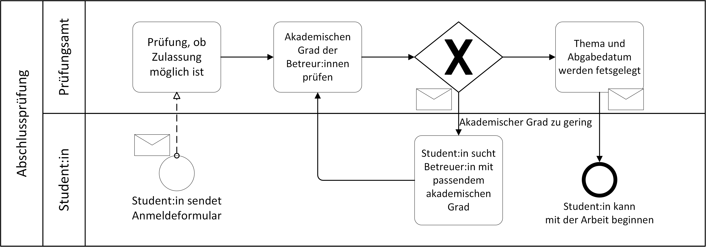

Grafischer Workflow-Planer mit integriertem Formular-Editor
Vorstellung der Masterarbeit von Wilko Müller am 01.Juni 2022
Motivation
- Pandemie führt zur Zunahme bei der Digitalisierung von Arbeitsabläufen
- Webanwendungen können Arbeitsabläufe unterstützen
- Erstellung solcher Webanwendungen erfordert:
- Programmierkenntnisse
- Wissen über Tools und Frameworks
- Sachverstand über das Anwendungsszenario
Anforderungen
- Entwicklungsprozess soweit vereinfachen, dass
- kaum Programmierkenntnisse erforderlich sind.
- eine Low-Code bis No-Code Umgebung entsteht.
Beobachtung:
Interaktion erfolgt durch Formulare & E-Mails
- Editor zur Erstellung von Formularen
- Editor zur Erstellung von Workflows
- zentrale Abspeicherung von Formularen und Workflows
Beispiel-Workflow in BPMN
Lösungsansatz
Ziel:
Person mit Sachverstand über das Anwendungsszenario kann die Rolle des Programmierers übernehmen.Zwei Nutzerklassen:
- Workflow-Ersteller*innen
- Formularausfüllende
- Für Workflow-Ersteller*innen:
- Formular-Editor mit Drag and Drop Funktion
- grafischen Workflow-Editor mit Bausteinen und Datenflussverbindungen
- Für Formularausfüllende:
- Web-Formulare
- Kontaktaufnahme über E-Mail
Verwandte Arbeiten
Kinto Formbuilder1
- Formulare lassen sich erstellen und hosten
- ausgefüllte Formulare können abgerufen werden
- keine automatisierten Funktionen auf den Daten möglich
- seit fünf Jahren keine Updates mehr
Formium 2
- Formular-Editor basierend auf FORMIK3
- eine Vielzahl an Möglichkeiten die Daten weiterzuverarbeiten
- bietet die zum Anwendungsfall dieser Arbeit passende Funktionalität
- kommerzielles Produkt und kein Open-Source
Repräsentation der Formulare
- Abspeicherung als HTML/JSX realisierbar, allerdings:
- keine Validierung der Eingaben möglich
- nachträgliche Stil-Anpassungen oder Positionierung schwierig
Alternativen:
JSONForms
- JSONForms Framework trennt zwischen:
- User-Interface Beschreibung in JSON
- Datentypen der Felder in JSON-Schema
- JSONForms mit React-Renderer kompatibel
- Renderer lässt sich modifizieren und erweitern
Vorteil: Ermöglicht selbe Repräsentation im Editor und im fertigen Formular
Live-Demo Formular-Editor
User-Interface Beschreibung:
{
"type": "VerticalLayout",
"elements": [
{
"type": "Label",
"text": "Formular zur Abfrage einiger Daten"
},
{
"type": "HorizontalLayout",
"elements": [
{
"type": "Control",
"scope": "#/properties/Text",
"label": "Vorname"
},
{
"type": "Control",
"scope": "#/properties/Text",
"label": "Nachname"
}
]
},
{
"type": "HorizontalLayout",
"elements": [
{
"type": "Control",
"scope": "#/properties/Text",
"label": "E-Mail"
},
{
"type": "Control",
"scope": "#/properties/Checkbox",
"label": "Ja, ich möchte E-Mails diesbezüglich erhalten"
}
]
},
{
"type": "Control",
"scope": "#/properties/Datumseingabe",
"label": "Abholtermin"
}
]
}
Daten-Schema:
{
"type": "object",
"title": "Formularbausteine",
"properties": {
"Datumseingabe": {
"type": "string",
"format": "date"
},
"Uhrzeit": {
"type": "string",
"format": "time"
},
"Datum & Uhrzeit": {
"type": "string",
"format": "date-time",
"schreibmodus": "readonly"
},
"Nummer": {
"type": "number"
},
"Checkbox": {
"type": "boolean"
},
"Text": {
"type": "string",
"minLength": 2
}
}
}

Formular aus Sicht der erstellenden Person

Formular aus Sicht der ausfüllenden Person
Herausforderung:
Drag and Drop im Browser
- Ersten Formular-Editor Prototype mit ReactDnD5 umgesetzt
- Vereinfacht Zustandsänderungen bei Events
- Monitor-Connect Logik gewöhnungsbedürftig
- Probleme mit Hooks und zu häufigem Rendering
Nachteile
Darstellung der Workflows

- Drag-and-Drop-Bausteine mit:
- Verbindungspunkten (Input/Output)
- Baustein-spezifischen Einstellungsmöglichkeiten
- Verbindungslinien, die:
- zwischen Bausteinen gezogen werden können
- einen Datenfluss darstellen
- Technische Umsetzung mit ReactFlow
Live-Demo Workflow-Editor
Transformation von GUI-Workflow zu Backend
- Konvertierung client-seitig
- Grundstruktur für alle Bausteine erstellen
- Baustein-spezifische Einstellungen zuordnen und einfügen
- Grundstruktur für die Verbindungslinien erstellen und Quell-Baustein eintragen
- Im Ziel-Baustein der Verbindungslinien die restlichen Attribute setzen
Generierter Workflow in JSON
{
"components": {
"inputdndnode_0": {
"type": "JFormOutput",
"formId": "44be8c20-dc68-48e0-9347-598faa81298e"
},
"dataManipulationdndnode_0": {
"type": "UDF",
"code": "def run(x):\\n return x['string']",
"outputTypeHint": "String",
"stream": "inputdndnode_0"
},
"dataManipulationdndnode_1": {
"type": "UDF",
"code": "def run(x):\\n return x['date']",
"outputTypeHint": "Date",
"stream": "inputdndnode_0"
},
"filterdndnode_2": {
"type": "UDF",
"filterFields": "date"
},
"outputdndnode_3": {
"type": "Void",
"stream": "reactflow__edge-inputdndnode_0-dataManipulationdndnode_0"
},
"reactflow__edge-inputdndnode_0-dataManipulationdndnode_1": {
"type": "LeftJoin",
"stream1": "inputdndnode_0",
"stream2": "dataManipulationdndnode_1"
},
"reactflow__edge-inputdndnode_0-dataManipulationdndnode_0": {
"type": "LeftJoin",
"stream1": "inputdndnode_0",
"stream2": "dataManipulationdndnode_0"
},
"reactflow__edge-dataManipulationdndnode_0-filterdndnode_2": {
"type": "LeftJoin",
"stream1": "dataManipulationdndnode_0",
"stream2": "filterdndnode_2"
},
"reactflow__edge-dataManipulationdndnode_1-filterdndnode_2": {
"type": "LeftJoin",
"stream1": "dataManipulationdndnode_1",
"stream2": "filterdndnode_2"
}
}
}
Das erstellte JSON wird an das Backend gesendet und ausgeführt.
Architektur
Abspeicherung der Formulare & Workflows
- Problem: Verknüpfung zwischen Nutzer*innen & Formularen
- Backend soll einziger Speicherort sein
- Lösung: Frontend-API verknüpft Formular/Workflow ID mit Nutzer ID
- Mit wenig Aufwand andere Authentifizierungsprovider einbinden
Authentifizierung
- Authentifizierung über Stud.IP
- zusätzlicher JSON-Webtoken(JWT)
- JWT und Stud.IP-User im Session-Storage des Browsers

Fazit
- Abfrage von Daten durch Formulare zugänglicher gemacht
- Workflows mit Datenfiltern und ggf. Python-Datenverarbeitungsfunktionen gut umsetzbar
- Senden von eventbasierten Benachrichtigungen (zu) komplex für Workflow-Ersteller und für Programmierer
Workflow-Planer unterstützt bei administrativen Aufgaben
Referenzen
- Kinto Form Builder: Github
- Formium Form Builder: formium.io
- Formik Form Library: formik.org
- JSONForms: jsonforms.io
- ReactDnD: Webseite
- ReactDND: issue dragLayer: Github
- ReactDND: issue CPU usage: Github